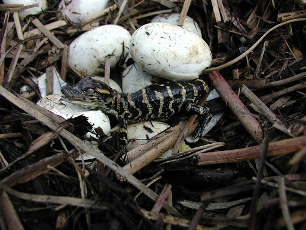

| Nombre | Cocodrilo Marino |
| Familia | Crocodylidae |
| Nombre Cientifico | Crocodylus porosus |
| Estado de conservación | Preocupacion menor |
| Habitat | Manglares costeros, salados y de ríos |
| Alimentación | Gaures , Tigres , Tapires malayos |
| Población | 100.000 - 200.000 ejemplares |
El cocodrilo de agua salada tiene un hocico ancho en comparación con la mayoría de los cocodrilos. Sin embargo, tiene un hocico más largo que el del cocodrilo de las marismas (Crocodylus palustris); su longitud es el doble de su ancho en la base. Un par de crestas van desde los ojos a lo largo del centro del hocico. Las escamas son de forma ovalada y las placas son pequeñas en comparación con otras especies o comúnmente están completamente ausentes. Además, también está presente una brecha obvia entre los escudos cervical y dorsal, y pequeñas escamas triangulares que están presentes entre los bordes posteriores de las escamas grandes, dispuestos transversalmente la escama dorsal. Los cocodrilos de agua salada, son los reptiles más grandes en la actualidad, siendo los machos los cocodrilos más grandes actualmente, debido a su masa, peso y tamaño. Los machos pesan entre 480 y 1500 kg, y miden entre un promedio de 4,3 y 6,7 metros de longitud.
Este reptil se distribuye en paises y zonas como: India, Sri Lanka, Bangladés hasta Birmania, Tailandia, Malasia, Camboya, Vietnam, Brunéi Darussalam, Indonesia, Filipinas, Palau, Islas Salomón, Vanuatu y la costa norte de Australia